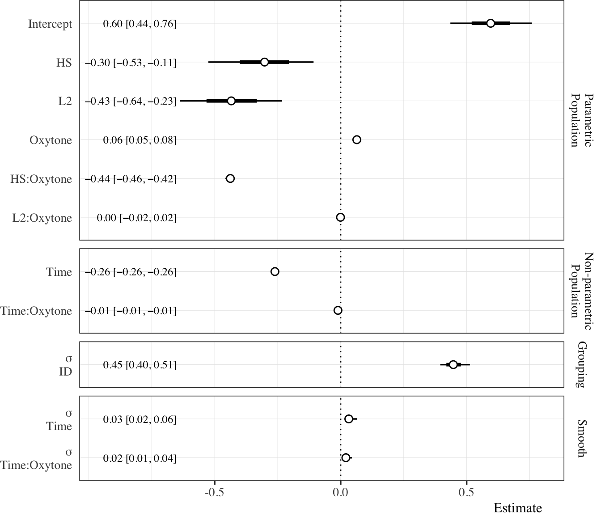
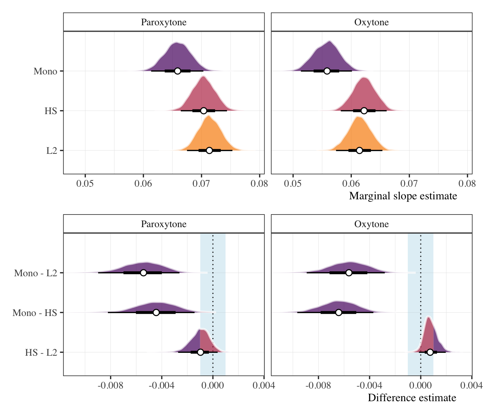
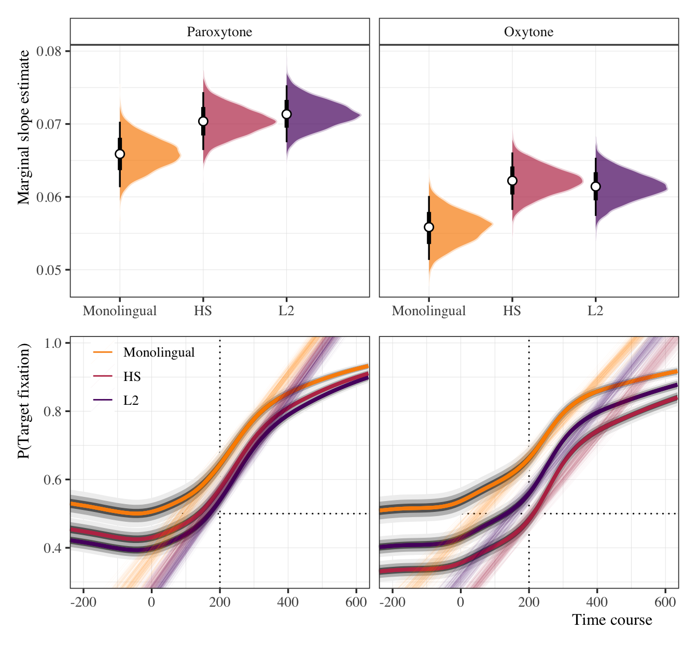
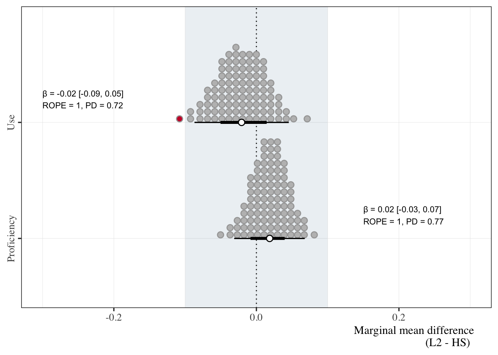

| Metric | HL (n = 42) | L2 (n = 50) | Contrast | Estimate | ROPE | PD |
|---|---|---|---|---|---|---|
| Proficiency | 0.70 (0.09) | 0.71 (0.14) | L2 - HL | 0.02 [−0.03, 0.07] | 1 | 0.77 |
| Use | 0.41 (0.15) | 0.38 (0.16) | L2 - HL | −0.02 [−0.09, 0.05] | 1 | 0.72 |
Morphological predictability - HS: 1.2
Report
Abstract
Write-up of morphosyntactic predictability project.
1 Introduction
1.1 Lexical stress
Lexical stress (henceforth stress) refers to the relative prominence of one syllable with regard to the others in a given word. Stress is lexically encoded and contrastive in Spanish (‘término’ [ˈteɾ.mi.no], Eng. term; ‘termino’ [teɾ.ˈmi.no], Eng. I finish; ‘terminó’ [teɾ.mi.ˈno], Eng. (s)he finished) and in English (‘produce’ [ˈpɹo.duːs] noun, ‘produce’ [pɹə.ˈduːs] verb), though it is more productive in the former than in the latter. To wit, few stress minimal pairs exist in English that are not semantically related (See Cutler, 2012). The primary acoustic correlates of stress are f_{0}, duration, and intensity, though their relative cue-weighting is language-specific (See Chrabaszcz et al., 2014; Gordon & Roettger, 2017; Holt & Lotto, 2006, among many others). Despite native English speakers’ familiarity with stress, they typically have trouble producing (Bullock & Lord, 2003; Lord, 2007) and perceiving (Face, 2000, 2005, 2006; Ortega-Llebaria et al., 2013; Saalfeld, 2012) stress differences in L2 Spanish. A possible explanation might be found in language-specific isochrony (Pike, 1945). Whereas English is often described as a ‘stress-timed’ language, i.e., one with relatively constant intervals between stressed syllables, Spanish is typically described as ‘syllable-timed’, i.e., each syllable is perceived as having the same duration. Differences such as these may shape how stress is perceived in each language. In English, for example, unstressed vowel reduction—often present in stress-timed languages—may be sufficient for indicating stress (Cutler, 2012; Tremblay et al., 2018), rendering other cues relatively less important for speech perception. As a consequence, native English speakers may have to adjust their cue-weighting strategies when learning Spanish, a language that does not have vowel reduction. Evidence from cross-modal priming studies indeed suggests that stress is processed differently by native listeners in both languages during lexical access (See Cooper et al., 2002; Soto-Faraco et al., 2001). The extant literature suggests that native listeners are tuned in to the relevant acoustic cues of their language and take advantage of them to increase processing efficiency. Unsurprisingly, they use the same cue-weighting strategies when learning an L2, often resulting in difficulties during the early stages of acquisition (Ingvalson et al., 2012; Iverson et al., 2003). With regard to prediction, there is evidence that monolingual Spanish speakers use lexical stress to predict a word’s suffix (AUTHORS) and that highly skilled late bilinguals can also learn this skill (AUTHORS). It is not clear how unique language experience, e.g., heritage speakers, language proficiency and language use modulate spoken word prediction.
2 Method
2.1 Participants
We collected data from 122 individuals for analysis. There were 30 monolingual participants, 42 heritage speakers, and 50 adult L2 learners. The bilingual participants completed language use and proficiency assessments. We fit the use and proficiency data to separate Bayesian linear models to assess potential group differences.1 We compare the posterior marginal mean difference between groups on both response variables. We established a region of practical equivalence (ROPE) of ±0.1. If, for a given measure, the full range of the 95% highest density credible interval (HDI) of the difference estimate falls within the ROPE, we consider there to be compelling evidence that the groups are equivalent. The HL group had an average proficiency score of 0.70 (SD = 0.09) compared to the L2 groups’ score of 0.71 (SD = 0.14). The marginal mean difference was 0.02 [−0.03, 0.07] and all of the HDI fell within the ROPE. The probability that the effect was positive was 0.77. Regarding language use, the HL group had an average score of 0.41 (SD = 0.15) compared to the L2 groups’ score of 0.38 (SD = 0.16). The marginal mean difference was −0.02 [−0.09, 0.05] and, again, all of the HDI fell within the ROPE. The probability that the effect was negative was 0.72. Taken together, we are confident that the groups do not differ in any meaningful way with regard to use of/proficiency in Spanish. Table 1 provides descriptive statistics and summarizes the models.
2.2 Statistical analyses
We fit a series of Bayesian regression analyses to examine to time course data. The primary model is a Generalized Additive Mixed Model (GAMM, Sóskuthy, 2017; Winter & Wieling, 2016). GAMMs are useful for scrutinizing non-linear data, such as that typically associated with eye-tracking.2 In subsequent analyses, we summarize the posterior predictive distribution to make inferences about the relationships between speaker groups, lexical stress, language proficiency, and language use. Given the distinct nature of some of these analyses, we provide a brief description of the statistical approach at the beginning of each of the corresponding subsections. For all models, we use regularizing, weakly informative priors (Gelman et al., 2017).3 In most cases, we established a region of practical equivalence (ROPE) around a point null value using the following formula (See Kruschke, 2018):
ROPE = \frac{\mu_1 - \mu_2}{\sqrt{\frac{\sigma_1^2 + \sigma_2^2}{2}}}
We report mean posterior point estimates for parameters of interest, along with the 95% highest density credible interval (HDI), the percent of the region of the HDI contained within the ROPE, and the probability of direction for each effect (PD). For statistical inferences, we focus on estimation rather than decision-making rules, though, generally, a posterior distribution for a parameter β in which 95% of the HDI falls outside the ROPE and a high PD (i.e., values close to 1) are taken as compelling evidence for a given effect. We conducted all analyses using R (version 4.2.1) and fit all models using the probabilistic programming language stan via the R package brms (Bürkner, 2017, 2018).
3 Results
The analyses are divided into three subsections. First, we describe the trajectories of the time course. Second, we evaluate suffix prediction at the target syllable offset. Finally, we consider the effects of L2 use and proficiency.
3.1 The time course of morphological processing
The time course data from the eye-tracking task were analyzed to model how the probability of fixating on target items changed over time and under different suprasegmental conditions. We downsampled the data to bins of 50 ms which were centered at the offset of the first syllable of target items. The time course of fixation used for analysis ranged from 200 ms before target syllable offset to 600 ms after. We chose this window because it captured the portion of the time course in which target fixations began to steadily increase from chance. Figure 1 illustrates the trajectories of the Monolingual, HL, and L2 groups as a function of lexical stress. In both panels, we see that the probability of fixating on the target hovers around .5 and begins to increase as time increases. Crucially, we also observe that the lines are not overlapping. For both paroxytonic and oxytonic stress conditions, the monolingual group begins to fixate on the target earlier in the time course. In essence, the HL and L2 groups are phase shifted to the right, representing later target fixation.

Given the binary nature of the outcome variable (target fixation, elsewhere), the likelihood was assumed to be binomially distributed. The model assessed target fixations as a function of the parametric terms group (monolingual, HL, L2), stress (paroxytone, oxytone), and a non-linear function of time. Both group and stress were set as ordered variables with monolinguals and paroxytones coded as ‘0’. We implemented cubic regression splines with four basis knots as (a) a reference smooth to time, (b) as a difference smooth to time conditioned on stress, and (c) as a random smooth for each participant conditioned on time. Thus, we use the trajectory of the monolinguals’ target fixations to paroxytone words (e.g., CANta) as the baseline and compared it the trajectories of the other groups. The forest plot in Figure 2 illustrates the model summary (See supplementary materials for the complete summary in table form).

In order to quantify and assess the between-group differences over time, we used the posterior predictive distribution to calculate posterior pairwise difference smooths. Figure 3 illustrates these pairwise comparisons over the time course in the probability space. Overall, the analysis shows that the monolingual group fixates on targets earlier than the HL and L2 groups in both stress conditions over the time-window we have selected. The HL-L2 comparison suggests that the HL group fixates on targets slightly more and earlier in paxoytone condition, but the opposite is true in the oxytone condition.

3.2 Prediction at target offset
In order to assess the participants’ ability to predict suffixes, we used the posterior predictive distribution of target fixations 200 ms after the target syllable offset (i.e., the minimum time necessary to plan and launch a saccade, see Fischer, 1992). We assessed the probability that target fixation was greater than chance at this time point for each group, in each stress condition. We implemented a ROPE of $$0.01 around a point null, chance value of 0.5. Figure 4 illustrates posterior distributions of target fixations.

All groups fixated on targets above chance 200 ms after the target syllable offset with the exception of the HL group in the oxytone condition (β = 0.48, HDI = [0.45, 0.52], ROPE = 0.97, PD = 0.85). Approximately 97% of the HDI fell below the upper bound of the ROPE and there is an 85% chance that the estimate is below 0.5. Additionally, a small portion of the posterior probability mass of the L2 group in the paroxytone condition fell within the ROPE (β = 0.54, HDI = [0.51, 0.57], ROPE = 0.01, PD = 1), though, given the model, the data and our prior assumptions, the effect is nearly certain to be above 0.5.
Next, we assessed the rate of target fixations at the same time point (i.e., 200 ms after the offset of the target syllable). While the previous assessment explained if participants fixate on targets before hearing a critical suffix, this analysis sheds light on how fast target fixations occur by calculating the partial derivative (i.e., slope) of the trajectory at this time point. The top panels of Figure 5 show the marginal slope estimates for each group for paroxtone and oxytone words. The bottom panels of Figure 5 provide pairwise group comparisons in each condition. The monolingual group had a slower rate of target fixation (i.e., a less steep slope) than the HL group for paroxytones (β = -0.004, HDI = [-0.008, -0.001], ROPE = 0, PD = 0.999) and oxytones (β = -0.006, HDI = [-0.010, -0.004], ROPE = 0, PD = 1). This was also the case when compared with L2 learners (Paroxytones: β = -0.006, HDI = [-0.009, -0.003], ROPE = 0, PD = 1; Oxytones: β = -0.006, HDI = [-0.009, -0.003], ROPE = 0, PD = 1). Upon comparing the HL and L2 groups, we do not find compelling evidence that either group has a faster rate of target fixation. In the paroxytone condition, the L2 group might be slightly faster, but nearly half the HDI fell within the ROPE (β = -0.001, HDI = [-0.003, 0.000], ROPE = 0.514, PD = 0.922). In the oxytone condition the opposite was true, that is, the L2 group may have been slightly slower, but, again, a large portion of the HDI fell within the ROPE (β = 0.001, HDI = [0.000, 0.002], ROPE = 0.697, PD = 0.957). Taken together, we do not believe there is compelling evidence that the rate of target fixation differs between the HL and L2 groups. Additional plots and a table summary are provided in the supplementary materials.

3.3 Proficiency and use
In order to assess the effects of language proficiency and use, we took a subset of the bilingual data (HL and L2 groups). Specifically, we used the data from the time bin that corresponded with 200 ms after the offset of the initial syllable in the target items. We calculated the proportion of target fixations for each participant, in each condition and submitted these proportions to a zero-and-one inflated beta regression model. The outcome was modeled as a function of group (HL, L2), stress (paroxytone, oxytone), use, and proficiency, along with all higher order interactions. The group and stress predictors were sum coded (-1, 1) and the continuous predictors were standardized (i.e., converted to z-scores), thus the model intercept provided an estimate of target fixation marginalizing over group and stress, with use and proficiency equal to 0 (i.e., at the unstandardized mean). We included a group-level effect for participants. A full description of the model specification and priors is available in the supplementary materials.

4 References
5 Supplementary materials
5.1 Bayesian data analysis
This study employs Bayesian Data Analysis for quantitative inferential statistics. Specifically, this implies that we use Bayesian credible intervals—and other metrics—to draw statistical inferences. A Bayesian model calculates a posterior distribution, i.e., a distribution of plausible parameter values, given the data, a data-generating model, and any prior assumptions we have about those parameter values. Posterior distributions are computationally costly. For this reason, we use the Hamiltonian Markov Chain Monte Carlo algorithm to obtain a sample that includes thousands of values from the posterior distribution. In practical terms, what this means is that we do not calculate a single point estimate for an effect β, but rather we draw a sample of 4,000 plausible values for β. This allows us to quantify our uncertainty regarding β by summarizing the distribution of those values. We will use 4 statistics to describe the posterior distribution: (1) the posterior mean, (2) the highest density credible interval (HDI), (3) the proportion of the HDI that falls within a Region of Practical Equivalence (ROPE), and (4) the Maximum Probability of Effect (MPE). The posterior mean provides a point estimate for the distribution. The 95% highest density credible interval provides bounds for the effect. The ROPE designates a region of practical equivalence for a negligible effect and calculates the proportion of the HDI that falls within this interval.4 The MPE calculates the proportion of the posterior distribution that is of the median’s sign (or the probability that the effect is positive or negative). If, for instance, a hypothesis states that β > 0, we judge there to be compelling evidence for this hypothesis if the mean point estimate is a positive number, if the 95% credible interval of β does not contain 0 and is outside the ROPE by a reasonably clear margin, and the posterior P(β > 0) is close to one. Together these four statistics allow us to quantify our uncertainty and provide an intuitive interpretation of any given effect. Consider a case in which the posterior mean of β is 100 and the 95% credible interval is [40, 160]. The interval tells us that we can be 95% certain the true value of β is between 40 and 160, given the data, our model, and our prior information. Furthermore, the interval allows us to specify areas of uncertainty. In this example, we can conclude that the effect is almost certain to be positive. The lower interval value of 40 tells us that 95% of the plausible values are greater than 40. We also note that the interval covers a wide range of values, thus we also conclude that we are not very certain about the size of the effect. This type of interpretation is not possible under a frequentist paradigm.
5.2 GAMMs
| Effect | Term | Estimate | HDI | Rhat | Bulk ESS | Tail ESS |
|---|---|---|---|---|---|---|
| Population | Intercept | 0.60 | [0.44, 0.76] | 1.00 | 797.53 | 1436.65 |
| HL | −0.30 | [−0.53, −0.11] | 1.01 | 744.97 | 1223.82 | |
| L2 | −0.43 | [−0.64, −0.23] | 1.00 | 708.42 | 761.10 | |
| Oxytone | 0.06 | [0.05, 0.08] | 1.00 | 3429.99 | 3735.29 | |
| HL:Oxytone | −0.44 | [−0.46, −0.42] | 1.00 | 3469.26 | 3630.77 | |
| L2:Oxytone | 0.00 | [−0.02, 0.02] | 1.00 | 3114.31 | 3926.50 | |
| Time | −0.26 | [−0.26, −0.26] | 1.00 | 3581.16 | 3934.31 | |
| Time:Oxytone | −0.01 | [−0.01, −0.01] | 1.00 | 3865.39 | 3348.79 | |
| Grouping | sd(Intercept) | 0.45 | [0.40, 0.51] | 1.00 | 1088.45 | 1923.43 |
| Smooths | sds(Time) | 0.03 | [0.02, 0.06] | 1.00 | 1620.98 | 2149.99 |
| sds(Time:Oxytone) | 0.02 | [0.01, 0.04] | 1.00 | 2522.74 | 3383.84 |
| Group | Stress | Estimate | HDI | ROPE | PD |
|---|---|---|---|---|---|
| Monolingual | Paroxytone | 0.64 | [0.61, 0.68] | 0.00 | 1.00 |
| Oxytone | 0.66 | [0.63, 0.70] | 0.00 | 1.00 | |
| HL | Paroxytone | 0.57 | [0.54, 0.60] | 0.00 | 1.00 |
| Oxytone | 0.48 | [0.45, 0.52] | 0.97 | 0.85 | |
| L2 | Paroxytone | 0.54 | [0.51, 0.57] | 0.01 | 1.00 |
| Oxytone | 0.56 | [0.53, 0.59] | 0.00 | 1.00 |

| Stress | Comparison | Estimate | HDI | ROPE | PD |
|---|---|---|---|---|---|
| Paroxytone | HL - L2 | -0.001 | [-0.003, 0.000] | 0.514 | 0.922 |
| Mono - HL | -0.004 | [-0.008, -0.001] | 0.000 | 0.999 | |
| Mono - L2 | -0.006 | [-0.009, -0.003] | 0.000 | 1.000 | |
| Oxytone | HL - L2 | 0.001 | [0.000, 0.002] | 0.697 | 0.957 |
| Mono - HL | -0.006 | [-0.010, -0.004] | 0.000 | 1.000 | |
| Mono - L2 | -0.006 | [-0.009, -0.003] | 0.000 | 1.000 |

| Effect | Term | Estimate | HDI | Rhat | Bulk ESS | Tail ESS |
|---|---|---|---|---|---|---|
| Population | Intercept | 0.38 | [0.22, 0.53] | 1.01 | 565.11 | 1104.64 |
| L2 | −0.17 | [−0.37, 0.04] | 1.02 | 439.52 | 928.86 | |
| Oxytone | −0.39 | [−0.41, −0.38] | 1.00 | 3169.14 | 3706.47 | |
| Proficiency | 0.04 | [−0.06, 0.14] | 1.01 | 668.20 | 1129.77 | |
| Use | 0.02 | [−0.09, 0.12] | 1.00 | 686.17 | 1083.40 | |
| L2:Oxytone | 0.51 | [0.50, 0.53] | 1.00 | 3124.51 | 3462.27 | |
| Time | 1.49 | [1.48, 1.51] | 1.00 | 3101.44 | 3522.33 | |
| Time:Oxytone | 0.00 | [−0.02, 0.02] | 1.00 | 2909.08 | 3457.55 | |
| Grouping | sd(Intercept) | 0.49 | [0.42, 0.58] | 1.00 | 904.53 | 1272.59 |
| Smooths | sds(Time) | 1.39 | [0.34, 3.86] | 1.00 | 2319.02 | 2697.02 |
| sds(Time:Oxytone) | 0.88 | [0.10, 3.27] | 1.00 | 1838.93 | 1948.50 |

5.3 Proficiency and use


| Effect | Term | Estimate | HDI | Rhat | Bulk ESS | Tail ESS |
|---|---|---|---|---|---|---|
| Population | Intercept | 0.13 | [0.02, 0.24] | 1 | 4040.14 | 3952.14 |
| ϕ Intercept | 2.17 | [1.86, 2.51] | 1 | 3852.71 | 3739.37 | |
| zi Intercept | −4.37 | [−6.34, −3.17] | 1 | 3847.73 | 3778.92 | |
| Group | −0.04 | [−0.15, 0.06] | 1 | 4103.24 | 3948.07 | |
| Stress | 0.00 | [−0.10, 0.10] | 1 | 3881.54 | 3775.78 | |
| Use | 0.02 | [−0.09, 0.13] | 1 | 3869.10 | 3873.47 | |
| Proficiency | 0.06 | [−0.06, 0.19] | 1 | 3942.20 | 3929.86 | |
| Group:Stress | 0.19 | [0.09, 0.29] | 1 | 3773.70 | 3696.87 | |
| Group:Use | −0.13 | [−0.23, −0.02] | 1 | 3739.06 | 3711.31 | |
| Stress:Use | −0.12 | [−0.23, −0.01] | 1 | 3926.60 | 3999.60 | |
| Group:Proficiency | −0.02 | [−0.15, 0.09] | 1 | 4021.95 | 4014.15 | |
| stress_sum:prof_z | −0.01 | [−0.13, 0.11] | 1 | 3940.73 | 3437.18 | |
| Use:Proficiency | 0.00 | [−0.13, 0.12] | 1 | 3612.81 | 3918.69 | |
| Group:Stress:Use | 0.02 | [−0.10, 0.12] | 1 | 3982.24 | 3756.15 | |
| Group:Stress:Prof. | 0.07 | [−0.04, 0.19] | 1 | 3931.67 | 4102.86 | |
| Group:Use:Prof. | −0.04 | [−0.16, 0.09] | 1 | 3879.26 | 3396.92 | |
| Stress:Use:Prof. | 0.00 | [−0.12, 0.12] | 1 | 3990.53 | 3892.69 | |
| Group:Stress:Use:Prof. | −0.11 | [−0.23, 0.01] | 1 | 4030.29 | 3842.42 | |
| Grouping | sd(Intercept) | 0.14 | [0.01, 0.32] | 1 | 3446.94 | 3699.61 |
| sd(Stress) | 0.10 | [0.00, 0.26] | 1 | 3533.06 | 3722.07 | |
| sd(ϕ Intercept) | 0.82 | [0.45, 1.23] | 1 | 3638.79 | 3850.73 | |
| sd(zi Intercept | 0.81 | [0.03, 2.44] | 1 | 3975.84 | 3798.24 | |
| cor(Intercept,Stress) | −0.16 | [−0.96, 0.91] | 1 | 3883.60 | 3654.52 |
5.4 Reproducibility information
About this document
This document was written in quarto.
Session info
setting value
version R version 4.2.1 (2022-06-23)
os macOS Big Sur ... 10.16
system x86_64, darwin17.0
ui X11
language (EN)
collate en_US.UTF-8
ctype en_US.UTF-8
tz America/New_York
date 2022-10-07
pandoc 2.18 @ /Applications/RStudio.app/Contents/MacOS/quarto/bin/tools/ (via rmarkdown) loadedversion date
abind 1.4-5 2016-07-21
arrayhelpers 1.1-0 2020-02-04
assertthat 0.2.1 2019-03-21
backports 1.4.1 2021-12-13
base64enc 0.1-3 2015-07-28
bayesplot 1.9.0 2022-03-10
bayestestR 0.12.1 2022-05-02
bit 4.0.4 2020-08-04
bit64 4.0.5 2020-08-30
bridgesampling 1.1-2 2021-04-16
brms 2.17.0 2022-04-13
Brobdingnag 1.2-7 2022-02-03
cachem 1.0.6 2021-08-19
callr 3.7.2 2022-08-22
cellranger 1.1.0 2016-07-27
checkmate 2.1.0 2022-04-21
cli 3.3.0 2022-04-25
coda 0.19-4 2020-09-30
codetools 0.2-18 2020-11-04
colorspace 2.0-3 2022-02-21
colourpicker 1.1.1 2021-10-04
crayon 1.5.1 2022-03-26
crosstalk 1.2.0 2021-11-04
datawizard 0.5.1 2022-08-17
DBI 1.1.3 2022-06-18
devtools 2.4.4 2022-07-20
digest 0.6.29 2021-12-01
distributional 0.3.0 2022-01-05
dplyr 1.0.9 2022-04-28
DT 0.24 2022-08-09
dygraphs 1.1.1.6 2018-07-11
ellipsis 0.3.2 2021-04-29
emmeans 1.8.1-1 2022-09-08
estimability 1.4.1 2022-08-05
evaluate 0.16 2022-08-09
fansi 1.0.3 2022-03-24
farver 2.1.1 2022-07-06
fastmap 1.1.0 2021-01-25
forcats 0.5.2 2022-08-19
fs 1.5.2 2021-12-08
generics 0.1.3 2022-07-05
ggdist 3.2.0 2022-07-19
ggplot2 3.3.6 2022-05-03
ggridges 0.5.3 2021-01-08
glue 1.6.2 2022-02-24
gridExtra 2.3 2017-09-09
gtable 0.3.0 2019-03-25
gtools 3.9.3 2022-07-11
here 1.0.1 2020-12-13
highr 0.9 2021-04-16
hms 1.1.2 2022-08-19
htmltools 0.5.3 2022-07-18
htmlwidgets 1.5.4 2021-09-08
httpuv 1.6.5 2022-01-05
igraph 1.3.4 2022-07-19
inline 0.3.19 2021-05-31
insight 0.18.2 2022-08-10
janitor 2.1.0 2021-01-05
jsonlite 1.8.0 2022-02-22
knitr 1.40 2022-08-24
later 1.3.0 2021-08-18
lattice 0.20-45 2021-09-22
lifecycle 1.0.1 2021-09-24
loo 2.5.1 2022-03-24
lubridate 1.8.0 2021-10-07
magrittr 2.0.3 2022-03-30
markdown 1.1 2019-08-07
Matrix 1.5-0 2022-09-10
matrixStats 0.62.0 2022-04-19
memoise 2.0.1 2021-11-26
mime 0.12 2021-09-28
miniUI 0.1.1.1 2018-05-18
munsell 0.5.0 2018-06-12
mvtnorm 1.1-3 2021-10-08
nlme 3.1-157 2022-03-25
patchwork 1.1.2 2022-08-19
pillar 1.8.1 2022-08-19
pkgbuild 1.3.1 2021-12-20
pkgconfig 2.0.3 2019-09-22
pkgload 1.3.0 2022-06-27
plyr 1.8.7 2022-03-24
posterior 1.3.0 2022-08-15
prettyunits 1.1.1 2020-01-24
processx 3.7.0 2022-07-07
profvis 0.3.7 2020-11-02
promises 1.2.0.1 2021-02-11
ps 1.7.1 2022-06-18
purrr 0.3.4 2020-04-17
R6 2.5.1 2021-08-19
Rcpp 1.0.9 2022-07-08
RcppParallel 5.1.5 2022-01-05
readr 2.1.2 2022-01-30
readxl 1.4.1 2022-08-17
remotes 2.4.2 2021-11-30
reshape2 1.4.4 2020-04-09
rlang 1.0.4 2022-07-12
rmarkdown 2.16 2022-08-24
rprojroot 2.0.3 2022-04-02
rstan 2.21.5 2022-04-11
rstantools 2.2.0 2022-04-08
rstudioapi 0.14 2022-08-22
scales 1.2.1 2022-08-20
sessioninfo 1.2.2 2021-12-06
shiny 1.7.2 2022-07-19
shinyjs 2.1.0 2021-12-23
shinystan 2.6.0 2022-03-03
shinythemes 1.2.0 2021-01-25
snakecase 0.11.0 2019-05-25
StanHeaders 2.21.0-7 2020-12-17
stringi 1.7.8 2022-07-11
stringr 1.4.1 2022-08-20
svUnit 1.0.6 2021-04-19
tensorA 0.36.2 2020-11-19
threejs 0.3.3 2020-01-21
tibble 3.1.8 2022-07-22
tidybayes 3.0.2 2022-01-05
tidyr 1.2.0 2022-02-01
tidyselect 1.1.2 2022-02-21
tzdb 0.3.0 2022-03-28
urlchecker 1.0.1 2021-11-30
usethis 2.1.6 2022-05-25
utf8 1.2.2 2021-07-24
vctrs 0.4.1 2022-04-13
vroom 1.5.7 2021-11-30
withr 2.5.0 2022-03-03
xfun 0.32 2022-08-10
xtable 1.8-4 2019-04-21
xts 0.12.1 2020-09-09
yaml 2.3.5 2022-02-21
zoo 1.8-10 2022-04-15References
Bullock, B., & Lord, G. (2003). Analogy as a learning tool in second language acquisition. In A. T. Pérez-Leroux & Y. Roberge (Eds.), Romance linguistics: Theory and acquisition (Vol. 244, pp. 281–297). John Benjamins Publishing. https://doi.org/10.1075/cilt.244.21bul
Bürkner, P.-C. (2017). brms: An R package for Bayesian multilevel models using Stan. Journal of Statistical Software, 80(1), 1–28. https://doi.org/10.18637/jss.v080.i01
Bürkner, P.-C. (2018). Advanced Bayesian Multilevel Modeling with the R Package brms. The R Journal, 10(1), 395–411. https://doi.org/10.32614/RJ-2018-017
Chrabaszcz, A., Winn, M., Lin, C. Y., & Idsardi, W. J. (2014). Acoustic cues to perception of word stress by english, mandarin, and russian speakers. Journal of Speech, Language, and Hearing Research, 57(4), 1468–1479. https://doi.org/10.1044/2014_JSLHR-L-13-0279
Cooper, N., Cutler, A., & Wales, R. (2002). Constraints of lexical stress on lexical access in english: Evidence from native and non-native listeners. Language and Speech, 45(3), 207–228. https://doi.org/10.1177/002383090204500301
Cutler, A. (2012). Native listening: Language experience and the recognition of spoken words. MIT Press.
Face, T. L. (2000). The role of syllable weight in the perception of spanish stress. In H. Campos & E. Herburger (Eds.), Hispanic linguistics at the turn of the millennium (pp. 1–13). Sommerville, MA: Cascadilla Proceedings Project.
Face, T. L. (2005). Syllable weight and the perception of spanish stress placement by second language learners. Journal of Language and Learning, 3, 90–103.
Face, T. L. (2006). Cognitive factors in the perception of spanish stress placement: Implications for a model of speech perception. 44(6), 1237–1267. https://doi.org/10.1515/LING.2006.040
Fischer, B. (1992). Saccadic reaction time: Implications for reading, dyslexia, and visual cognition. In K. Rayner (Ed.), Eye movements and visual cognition. Springer series in neuropsychology (pp. 31–45). Springer. https://doi.org/10.1007/978-1-4612-2852-3_3
Gelman, A., Simpson, D., & Betancourt, M. (2017). The prior can often only be understood in the context of the likelihood. Entropy, 19(10), 1–13. https://doi.org/10.3390/e19100555
Gordon, M., & Roettger, T. (2017). Acoustic correlates of word stress: A cross-linguistic survey. Linguistics Vanguard, 3(1). https://doi.org/10.1515/lingvan-2017-0007
Holt, L. L., & Lotto, A. J. (2006). Cue weighting in auditory categorization: Implications for first and second language acquisition. The Journal of the Acoustical Society of America, 119(5), 3059–3071. https://doi.org/10.1121/1.2188377
Ingvalson, E. M., Holt, L. L., & McClelland, J. L. (2012). Can native japanese listeners learn to differentiate /r-l/ on the basis of F3 onset frequency? Bilingualism: Language and Cognition, 15(2), 255–274. https://doi.org/10.1017/S1366728911000447
Iverson, P., Kuhl, P. K., Akahane-Yamada, R., Diesch, E., Kettermann, A., Siebert, C., et al. (2003). A perceptual interference account of acquisition difficulties for non-native phonemes. Cognition, 87(1), B47–B57. https://doi.org/10.1016/s0010-0277(02)00198-1
Kruschke, J. K. (2018). Rejecting or accepting parameter values in Bayesian estimation. Advances in Methods and Practices in Psychological Science, 1(2), 270–280.
Lord, G. (2007). The role of the lexicon in learning second language stress patterns. Applied Language Learning, 17(1-2), 1–14.
Ortega-Llebaria, M., Gu, H., & Fan, J. (2013). English speakers’ perception of spanish lexical stress: Context-driven L2 stress perception. Journal of Phonetics, 41(3-4), 186–197. https://doi.org/10.1016/j.wocn.2013.01.006
Pike, K. L. (1945). The intonation of american english.
Saalfeld, A. K. (2012). Teaching L2 spanish stress. Foreign Language Annals, 45(2), 283–303. https://doi.org/10.1111/j.1944-9720.2012.01191.x
Sóskuthy, M. (2017). Generalised additive mixed models for dynamic analysis in linguistics: A practical introduction. arXiv Preprint arXiv:1703.05339.
Soto-Faraco, S., Sebastián-Gallés, N., & Cutler, A. (2001). Segmental and suprasegmental mismatch in lexical access. Journal of Memory and Language, 45, 412–432. https://doi.org/10.1006/jmla.2000.2783
Tremblay, A., Broersma, M., & Coughlin, C. E. (2018). The functional weight of a prosodic cue in the native language predicts the learning of speech segmentation in a second language. Bilingualism: Language and Cognition, 21(3), 640–652. https://doi.org/10.1017/S136672891700030X
Winter, B., & Wieling, M. (2016). How to analyze linguistic change using mixed models, growth curve analysis and generalized additive modeling. Journal of Language Evolution, 1, 1, 7–18. https://doi.org/https://doi.org/10.1093/jole/lzv003
Footnotes
In both cases, the response variable, use or proficiency score, was a proportion. Thus, we used the beta distribution for the model likelihood with a logit linking function. The models included regularizing, weakly informative priors. See Section 5.3 of the supplementary materials for full details.↩︎
GAMMs represent an extension to the linear model framework that allow non-linear functions called factor smooths to be applied to predictors. In this sense, the predictors can be classified into two types: parametric terms (equivalent to fixed effects in hierarchical model terminology) and smooth terms. Random smooths are conceptually similar to random slopes and intercepts in the mixed-effects regression framework (Winter & Wieling, 2016). Thus, they allow the by-subject trajectory shapes to vary as a function of a parametric effect and are essential in avoiding anti-conservative models.↩︎
See supplementary materials for detailed information.↩︎
We utilize a ROPE of ±1 for standardized values. For non-standardized values Kruschke (2018) recommends using the following formula: ROPE = \frac{\mu_1 - \mu_2}{\sqrt{\frac{\sigma_1^2 + \sigma_2^2}{2}}}↩︎